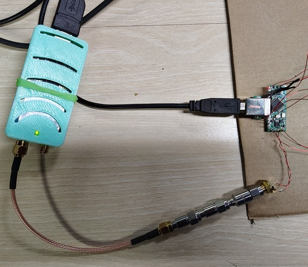
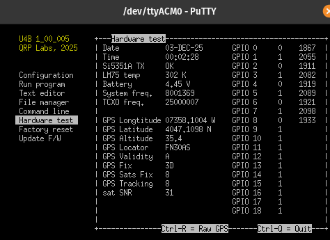

GNSS simulator
An attempt to make a GNSS SDR simulator and use it for testing balloon tracker payloads. This is based on an archived LimeGPS simulator since I have a LimeSDR.
Build and run container
I built a podman container based on ubuntu 22.04 and installed the dependencies into it. Obtain the container by building:
podman-compose -f compose.yml build limegpsor pull the container
podman pull ghcr.io/anielsen001/gnss-sim:latestand run it
podman-compose -f compose.yml run limegpsyou can likely substitute docker for podman.
USB device access
With podman you need to set udev access to the usb devices for your user. On my host system I have ubuntu 24.04 which does not currently (30 Nov 2025) have a limesuite-udev pacakge on the myriadrf ppa. However myriadrf/LimeSuite github has a set of udev rules that you can use to create the udev rules for the LimeSDR.
Copy this set of rules into /dev/udev/rules.d/64-limesuite.rules.
SUBSYSTEM=="usb", ATTR{idVendor}=="04b4", ATTR{idProduct}=="8613", SYMLINK+="stream-%k", MODE="666"
SUBSYSTEM=="usb", ATTR{idVendor}=="04b4", ATTR{idProduct}=="00f1", SYMLINK+="stream-%k", MODE="666"
SUBSYSTEM=="usb", ATTR{idVendor}=="0403", ATTR{idProduct}=="601f", SYMLINK+="stream-%k", MODE="666"
SUBSYSTEM=="usb", ATTR{idVendor}=="1d50", ATTR{idProduct}=="6108", SYMLINK+="stream-%k", MODE="666"
SUBSYSTEM=="xillybus", MODE="666"
SUBSYSTEM=="tty", ATTRS{idVendor}=="0403", ATTRS{idProduct}=="6001", MODE="0666"Reload the udev rules with
sudo udevadm control --reload-rules
sudo udevadm triggerGPS Ephemeris files from NASA
You will need space geodesy data from NASA. These are the ephemeris files that specify the satellite orbit. Foun at https://cddis.nasa.gov/archive/gnss/data/daily/. This does require registration for a free account. You can find details about the files at https://www.earthdata.nasa.gov/data/space-geodesy-techniques/gnss/broadcast-ephemeris-data-product. These files are updated hourly and ideally you want the most recent.
For example there’s an hourly file at https://cddis.nasa.gov/archive/gnss/data/hourly/2025/337/hour3370.25n.gz that can be used.
Running simulation
start the container
podman-compose -f compose.yml run limegpsyou will drop to a shell prompt in the container. Run the simulator
/opt/LimeGPS -e brdc0350.18n -l 35.274,137.014,100LimeSDR Mini output maximum power is 10 mW. The LimeGPS executable allows you to specify the output gain using the -a flag.
Testing
Testing with U4b balloon tracker.
Connected the LimeSDR directly to the U4b using 60 dB of attenuation and a DC block and successfully simulated a GPS position.
Run the container
podman-compose run limegpsIn the container run the simulator
/opt/LimeGPS/LimeGPS -a 0.7 -e /opt/project/hour3370.25n 35.274,137.014,6400.00It appears that the specified altitude is ignored and the simulated alitude is 10m, see this GitHub issue.


Reference projects
- GNSS GPS SDR
- this has replay capability, but not simulation
- GPS SDR Sim, archived project
- LimeGPS, LimeSDR version of GPS SDR sim, also archived
- Pokemon implementation of GPS SDR Sim
- Multi SDR GPS Sim
- cites hrfGPS by Ivan Kor
- GNSS SDR
- this is a receiver only
- GNSS SDRlib